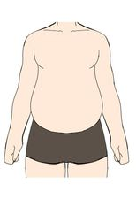
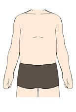
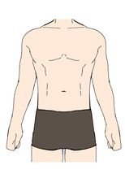
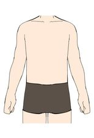
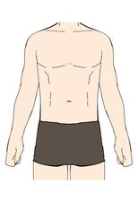

Choosing clothes for each body shape of man

Oval
- Should wear oversized shirts, fitted shirts or striped shirts.Should choose a dark color shirt.
- Should wear wide leg pants, straight pants, fit pants, big straight jeans.
- Should wear sneakers or shoes with added heels.
- Should not wear tight shirts or slim fit pants.

Triangle
- Should wear fitted shirts, button-down shirts, suits, jackets, off-shoulder shirts and
shirts with a blunt collar. Should choose a dark color shirt.
- Should wear straight pants or straight-leg jeans with slightly loose legs. Should choose a dark
color ,black ,brown ,blue or gray.
- Should wear sneakers or shoes with added heels.
- Should not wear tight-fitting shirts, lots of patterned shirts and slim fit pants.

Inverted triangle
- Should wear V-neck shirts, striped shirts, printed shirts in the middle of the body, suits or
jackets without buttoning, T-shirt, shirt and soft shoulder outerwear.
- Should wear straight-leg pants, slim fit pants, pants with playful pockets or pleated
pants.
- Should wear sneakers.
- Should not wear oversized shirt and loose pants.

Trapezoid
- Can wear all kinds of clothes in a variety of colors.
- Should wear pleated pants and skinny pants, slim or trouser petite pants.
- Should wear sneakers.
- Should not wear a jacket that is too fitted and pants which too loose.

Rectangle
- Should wear a suit jacket or jacket with shoulder padding, wide round neck shirt, printed in
middle shirt, shirt with pleats in the back, unbuttoned shirt.
- Should wear straight pants and slim fit pants.
- Should wear sneakers.
- Should not wear tight shirts and slim fit pants.
Oval
- Should wear oversized shirts, fitted shirts or striped shirts.Should choose a dark color shirt.
- Should wear wide leg pants, straight pants, fit pants, big straight jeans.
- Should wear sneakers or shoes with added heels.
- Should not wear tight shirts or slim fit pants.
Triangle
- Should wear fitted shirts, button-down shirts, suits, jackets, off-shoulder shirts and shirts with a blunt collar. Should choose a dark color shirt.
- Should wear straight pants or straight-leg jeans with slightly loose legs. Should choose a dark color ,black ,brown ,blue or gray.
- Should wear sneakers or shoes with added heels.
- Should not wear tight-fitting shirts, lots of patterned shirts and slim fit pants.
Inverted triangle
- Should wear V-neck shirts, striped shirts, printed shirts in the middle of the body, suits or jackets without buttoning, T-shirt, shirt and soft shoulder outerwear.
- Should wear straight-leg pants, slim fit pants, pants with playful pockets or pleated pants.
- Should wear sneakers.
- Should not wear oversized shirt and loose pants.
Trapezoid
- Can wear all kinds of clothes in a variety of colors.
- Should wear pleated pants and skinny pants, slim or trouser petite pants.
- Should wear sneakers.
- Should not wear a jacket that is too fitted and pants which too loose.
Rectangle
- Should wear a suit jacket or jacket with shoulder padding, wide round neck shirt, printed in middle shirt, shirt with pleats in the back, unbuttoned shirt.
- Should wear straight pants and slim fit pants.
- Should wear sneakers.
- Should not wear tight shirts and slim fit pants.